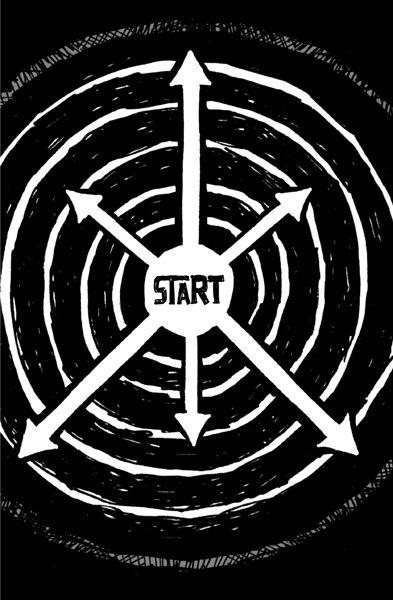

{% include JB/setup %}
{% raw %}
<div>

<h2 id="filepos82001" class="calibre19"><span class="calibre2"><a class="calibre13"></a><strong class="calibre14">Build half a product, not a half-assed product</strong></span></h2><div class="calibre4"></div>
<p class="calibre7">You can turn a bunch of great ideas into a crappy product real fast by trying to do them all at once. You just can't do <em class="italic1">everything</em> you want to do and do it well. You have limited time, resources, ability, and focus. It's hard enough to do one thing right. Trying to do ten things well at the same time? Forget about it.</p>
<p class="calibre17">So sacrifice some of your darlings for the greater good. Cut your ambition in half. You're better off with a kick-ass half than a half-assed whole.</p>
<p class="calibre17">Most of your great ideas won't seem all that great once you get some perspective, anyway. And if they truly are that fantastic, you can always do them later.</p>
<p class="calibre17">Lots of things get better as they get shorter. Directors cut good scenes to make a great movie. Musicians drop good tracks to make a great album. Writers eliminate good pages to make a great book. We cut this book in half between the next-to-last and final drafts. From 57,000 words to about 27,000 words. Trust us, it's better for it.</p>
<p class="calibre17">So start chopping. Getting to great starts by cutting out stuff that's merely good.</p>
<p class="calibre3"><a class="calibre16"></a></p><div class="calibre4"></div>
</div>

{% endraw %}

